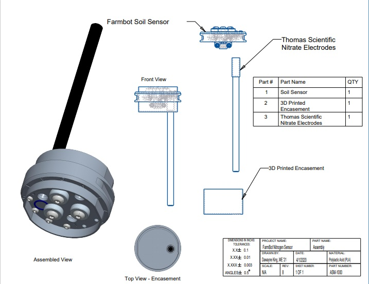
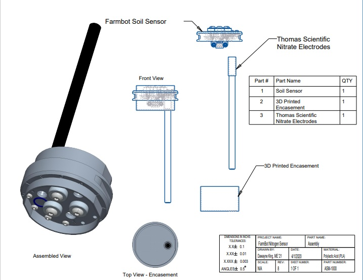

FarmBot to Improve Nitrogen Efficiency in Cultivation
Objective:
As a Mechanical Engineering student, I was solicited by Ulrick Cherichel to help with CAD Designs to support the Capstone for his senior Bioloical Systems Engineering project. With the project, I completed CAD Designs for FarmBot fittings, which included: One Hole 3D Printed Encasement Fitting,Two Hole 3D Printed Encasement Fitting, Thomas Scientific Nitrate Electrode, and Hach Electrode.
o Completed CAD Design for FarmBot fittings: 3D Printed Encasement Fitting, Thomas Scientific Nitrate Electrode, and Hach Electrode
o Manage and Updated Drawings, Designs, and Bill of Materials per request of project manager (Ulrick Cherichel)
o 3D Printed physical models for FarmBot


 
